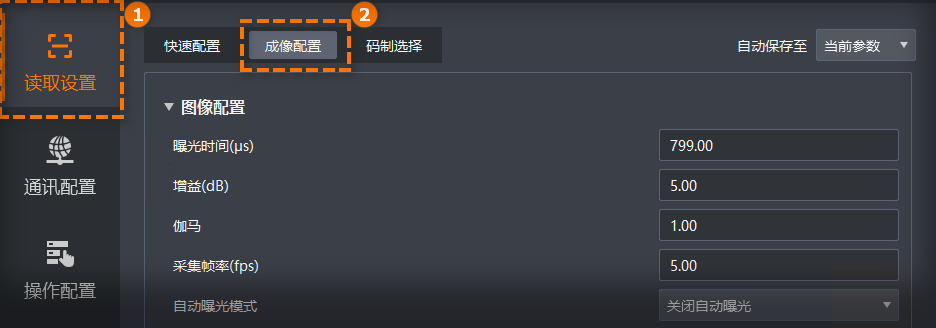

成像配置模块提供全面且精细的成像参数调整功能，可在此调整图像、光源、自适应、调焦等相关参数，以获得最佳的图像效果。
在主界面单击，进入成像配置页签，配置相关参数。
不同型号和固件版本的读码器可配置参数可能会有所差异，请以实际显示为准。

图像配置部分可对曝光时间、增益、伽马、采集帧率、自动曝光模式等参数进行设置，根据实际使用需求进行设置。
此参数用于指定读码器感光元件在捕获图像时暴露于光线中的时间长度。增大曝光时间可提高图像亮度，但一定程度上会降低采集帧率，且如果曝光值过大拍摄运动物体时容易出现拖影。
曝光时间计算公式为：曝光时间 = 视野 / 分辨率 / 传送带速度。
例如：读码器分辨率为5440×3648，视野有986mm×660mm，传送带速度1.5m/s，则计算的曝光时间=986 / 5440 / 1500=0.00012s=120μs，若此时画面亮度仍然较暗，可适当将曝光时间改大到150μs。
根据实际情况选择读码器的增益类型，可选择如下类型。
Hcg增益：高转换增益（High Conversion Gain），能够在低光环境下捕获更清晰的 图像，适用于光线较弱环境。
Lcg增益：低转换增益（Low Conversion Gain），能够处理明亮场景下的大信号， 减少过度曝光，适用于光线充足环境。
仅紧凑型(Mini)智能读码器支持配置此参数。
增大增益可提高图像的亮度，但一定程度上图像的噪点会增加。
读码场景算法对于增益适应性较强，可根据实际场景进行自定义。
伽马可调整图像的对比度。建议降低伽马的数值使暗处亮度提升，有助于条码的读取。
伽马值在0~1之间，图像暗处亮度提升；
伽马值在1~4之间，图像暗处亮度下降。
此参数为读码器每秒采集的图像帧数。 高帧率适合动态场景，可实时捕捉快速变化；低帧率适用于静态场景，可降低数据量与处理负担。
采集帧率数值计算公式为：采集帧率=1秒内照明持续时间/(曝光时间+照明提前时间)。
设置读码器的自动曝光模式，可选如下模式：
关闭自动曝光：手动设置曝光时间，适用于环境稳定、光线均匀且固定场景。
单次自动曝光：读码器根据当前环境亮度自动调整曝光时间一次，调整完成后自动切换为关闭模式，适合环境光线偶尔变化，需临时优化读码效果的情况。
连续自动曝光：读码器持续根据环境亮度自动调整曝光时间，确保图像始终处于最佳亮度状态，适用于光线变化频繁场景。
设置读码器的自动增益模式，可选如下模式：
关闭自动增益：手动设置增益，适用于环境稳定、光线均匀且固定场景。
单次自动增益：读码器根据当前环境亮度自动调整增益一次，调整完成后自动切换为关闭模式，适合环境光线偶尔变化，需临时优化读码效果的情况。
连续自动增益：读码器持续根据环境亮度自动调整增益，确保图像始终处于最佳亮度状态，适用于光线变化频繁场景。
单击高级参数可显示并配置如下参数。
设置读码器在单位时间内能够进行算法识别的图像帧数。
设置读码器触发一次采集的图像数。
此参数只有在沿触发模式（触发源为管脚0/1/2输入且触发极性为上升/下降沿、计数器0）或软件触发模式（触发源为TCP客户端、TCP服务端、串口触发、UDP触发）时生效，开启参数轮询后该参数不生效。
开启后读码器采集图像仅输出裸数据。
此参数由客户端存图中的图像格式参数控制，当图像格式参数选择BMP或RAW格式时，自动开启该开关；当图像格式参数选择JPG格式时，自动关闭该开关。
当自动曝光模式参数选择单次自动曝光或连续自动曝光时，通过此参数设置读码器采集图像时的曝光模式，可选如下模式。
全局曝光：针对预览画面整体进行曝光。
局部曝光：针对预览画面的特定范围进行曝光。选择此模式后支持通过如下参数设置曝光区域范围。
曝光区域宽度：局部曝光区域横向的分辨率。
曝光区域高度：局部曝光区域纵向的分辨率。
曝光区域X轴偏移：局部曝光区域左上角起点位置的横坐标。
曝光区域Y 轴偏移：局部曝光区域左上角起点位置的纵坐标。
条码曝光：针对预览画面中的条码区域进行曝光。
仅部分型号读码器支持选择条码曝光方式，实际支持情况请以界面显示为准。
选择是否启用交替曝光，开启后读码器按照开启的曝光组顺序依次曝光，以适应变化的环境光线，操作步骤如下。
自动曝光和交替曝光功能只支持开启其中一个，即自动曝光模式选择“关闭自动曝光”时，可打开交替曝光开关。
打开交替曝光开关，启用交替曝光功能。
在交替曝光组参数处，选择要配置的曝光组，例如第一组曝光。
在交替曝光时间(μs)参数处，配置当前曝光组的曝光时间数值。
重复步骤2~4，配置其他曝光组参与交替曝光并设置对应的曝光值。
选择是否开启交替增益，开启后读码器能够在不同增益组设置之间自动切换，以适应变化的环境光线，操作步骤如下。
自动增益和交替增益功能只支持开启其中一个，即自动增益模式选择“关闭自动增益”时，可打开交替增益开关。
打开交替增益开关，启用交替增益功能。
在交替增益组参数处，选择要配置的增益组，例如第一组增益。
在交替增益(dB)参数处，配置当前增益组的增益数值。
重复步骤2~4，配置其他增益组参与交替增益并设置对应的增益值。
选择是否开启在图像信号经过模数转换后，对数字信号进行放大。开启数字增益使能可以使图像亮度增加，但同时也会增加图像的噪声，影响图像质量
单击高级参数可显示此参数。
设置图像的明暗程度。
当触发模式选择关闭、自动曝光模式选择“连续自动曝光”、自动增益模式选择“连续自动增益”时，可配置此参数。
光源控制部分可对读码器自带光源的模式、光源通道和瞄准灯模式进行设置。
根据实际需求，选择光源模式，支持如下模式。
根据实际需求，选择需要开启的光源分路。
当读码器为一路光源时，仅支持一路光源。可通过单击全开或全关按钮，开启或关闭光源。
当读码器为四路光源时，可根据实际需要通过点击上、下、左、右的灯珠开启或关闭不同分路的光源。也可通过单击全开或全关按钮，开启或关闭所有分路的光源。
当读码器为六路光源时，可根据实际需要通过点击左上、中上、右上、左下、中下、右下的灯珠来开启或关闭不同分路的光源。也可通过单击全开或全关，开启或关闭所有分路的光源。
选择瞄准灯模式，可选关闭、取流时亮或常亮模式。
瞄准灯用于指示读码器视野，便于瞄准目标条码。
配备Tof（Time of Flight）传感器的读码器可设置Tof相关参数，实现对条码距离的精确测量。读码器可结合Tof 功能实现快速变焦，在移动场景下根据物体景深快速、精准、实时调整 焦距，适用于对调焦速度有要求的动态读码场景。
液态镜头通过电压调整液体形状来实现无机械延迟的即时对焦。所以相比机械镜头设备，液态镜头设备结合Tof 功能可实现更快的变焦速度。
调焦参数部分可配置读码器镜头的调焦相关参数。
开启Tof快速变焦使能、参数轮询或输入触发源选择“亮度感应触发”后，此部分参数不支持配置。
选择调焦时相关成像参数的处理方式，可选如下方式。
同步调整：调焦时自动更改并保存聚焦位置、曝光、增益、伽马、光源等参数。
参数不变：调焦时只更改聚焦位置，不更改曝光、增益、伽马、光源等参数。
调整但不保存：调焦时自动更改聚焦位置、曝光、增益、伽马、光源等参数，并在调焦完成后仅保留聚焦位置，恢复其他参数配置。
选择调焦模式，可选如下模式。
当单击高级参数时，可显示并配置此参数。
全局聚焦：对整个视野范围进行一次性调焦，确保整个视野内的图像都清晰对焦。
ROI区域自动聚焦：仅针对ROI区域进行自动聚焦，通过绘制ROI区域，实现该区域内的的图像清晰对焦。选择此模式可通过配置调焦区域左上角顶点X坐标、调焦区域左上角顶点Y坐标、调焦区域宽度(px)、调焦区域高度(px)参数绘制ROI区域。
可通过对焦ROI工具快速绘制调焦区域，详情请参见对焦ROI工具。
单击电机归位处的执行可将电机位置恢复至初始值。
设置调焦时镜头焦距的调整步长，每次调整会按照设定的步长值改变焦距。
显示当前读码器镜头的焦点位置。
单击正向调焦或反向调焦参数处的执行，可对读码器镜头的焦点位置进行正向或反向调整。
可根据实际预览画面的清晰程度选择调焦方向。当画面逐渐清晰时，可适当减小调焦的步进距离，以便更精确地调节焦距，达到最佳效果。
显示当前读码器镜头的焦点位置。
自适应设置部分可配置自适应调节时的相关参数，例如曝光、增益等参数。
开启参数轮询或输入触发源选择“亮度感应触发”后，此部分参数不支持配置。
单击高级参数可显示并配置如下参数。
选择自适应调节模式，可选如下模式。
静态感知模式：此模式下优先调节曝光，增益小，噪点小，图片质量较高，适用于静态或传送带速度较慢场景。
动态感知模式：此模式下优先调节增益，曝光小、增益大，图像质量略差，适用于 传送带速度较快场景。
选择自适应调节时的光源配置，可选择如下配置。
光源自适应：自适应调节开始时将遍历所有的常用光源组合方案，从中选择最优的一组应用。
所有光源打开：自适应调节开始时将打开所有光源通道的光源。
用户配置光源：自适应调节开始时将应用用户在光源控制配置的相关光源参数。
光源自适应(特殊组合)：自适应调节开始时将遍历所有的不常用光源组合方案，从中选择最优的一组应用。
配备显示屏的读码器可设置是否开启显示屏、显示屏亮度、显示语言及显示内容等参数。
其他参数部分可设置X/Y镜像、测试模式等。